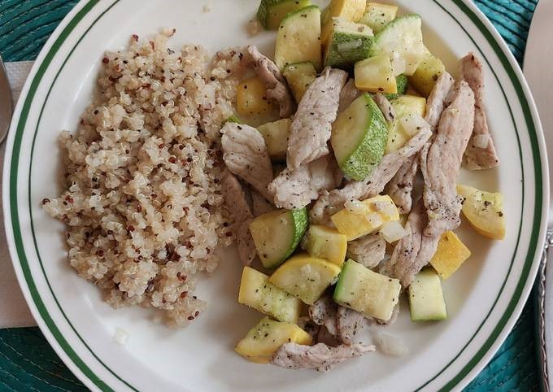

RECETA DE BISTEC DE CERDO CON CALABACITAS
Compartida por Mariana García
timer
person
Ingredientes
- 250 gr de bisteces de puerco
- 2 piezas de calabacitas japonesas
- 2 piezas de calabacitas zucchini amarillas
- ¼ de pieza de cebolla blanca
- 1 diente de ajo grande
- 1 cucharada de aceite de oliva
- 1 cucharadita de albahaca seca
- Sal y pimienta al gusto
- 1 hoja de laurel
Procedimiento
- Cortar las dos variedades de calabacitas en cubos. Picar la cebolla y el ajo.
- Salpimentar la carne y cortar en tiras.
- En una cacerola ancha calentar el aceite y sofreír la cebolla a que se transparente.
- Agregar el ajo a que suelte su aroma, entre 30 segundos y 1 minuto.
- Añadir la carne y freír hasta que se dore ligeramente.
- Agregar las calabacitas y saltear unos 5 minutos.
- Servir con el acompañamiento de tu preferencia, por ejemplo, quinoa.
